통신설비기능장 (2004-07-18 기출문제)
1과목: 임의 과목 구분(20문항)
1. 가스탐지기의 센서를 맨홀내에 넣었더니 갑자기 삐이하는 경보음이 났다. 이 맨홀은 어떠한 상태인가?
- 산소량이 너무 많다.
- 물이 가득 차 있다.
- 유독가스가 차 있다.
- 유독가스가 전혀 없다.
(정답률: 98%)

2. 일정 전압의 직류전원에 저항을 접속하고 전류를 흘릴 때 이 전류값을 20[%] 증가시키기 위한 저항 값은 처음의 약몇 배인가?
- 0.45
- 0.83
- 1.25
- 1.57
(정답률: 53%)
3. 회로시험기에서 교류전압계의 지시는?
- 최대값
- 실효값
- 평균값
- 순시값
(정답률: 93%)
4. 300[Ω]의 특성 임피던스를 갖는 선로에 75[Ω]의 특성 임피던스를 갖는 선로를 접속시 반사계수는?
- 0.25
- 0.5
- 0.6
- 0.75
(정답률: 70%)
5. 광통신 방식에 있어서 모드(mode)분산이 있으면 이 광섬유 케이블의 전송대역폭은 어떻게 되는가?
- 좁아진다.
- 넓어진다.
- 변화하지 않는다.
- 좁아지기도 하고 넓어지기도 한다.
(정답률: 46%)
6. 케이블을 외장구조에 의하여 구분할 때 수저 케이블은 다음에 열거한 케이블중 어느 케이블이 가장 적절한가?
- 비 케이블
- 포 케이블
- 대 케이블
- 선 케이블
(정답률: 51%)
7. 그림의 회로에서 Vce의 전압값이 5[V]이었다. 이 전압치를 높여주기 위하여 어떻게 하면 되는가?
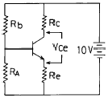
- Rb의 저항치를 크게 한다.(고저항)
- Rb의 저항치를 적게 한다.(저저항)
- RA의 저항치를 크게 한다.
- Re의 저항치를 크게 한다.
(정답률: 55%)
8. 58[Ω]의 전기저항과 8.6[H]의 자체인덕턴스를 직렬로 접속한 전기회로가 있다. 이 전기회로의 시정수(時定數)는 약 몇 초인가?
- 0.15
- 0.22
- 0.33
- 0.45
(정답률: 34%)
9. 자동 교환기에서 오접속의 원인이 아닌 것은?
- 가입자 Dial 이 불량인 경우
- 가입자 Loop 저항이 많을 경우
- 미니멈 포오즈가 다를 경우
- 통화선에 귀금속을 사용치 않을 경우
(정답률: 92%)
10. 다음중 임펄스 계전기의 마이너스 왜곡을 발생시키는 것은?
- 선로간의 정전용량 증가
- 선로의 절연저항 감소
- 전화기 임펄스 회로와 병렬로 접속된 정전용량
- 선로의 도체저항 증가
(정답률: 70%)
11. 최번시 1시간에 생긴 전화호수가 300이고 평균보류 시간이 3분일때 전화호량을 [Erl]로 나타내면 얼마인가?
- 5
- 10
- 15
- 20
(정답률: 60%)
12. VCE=6[V]에서 IB를 100[μA]에서 200[μA]로 변화시켰더니 IC는 4.5[mA]에서 8[mA]로 변했다. 이 때 트랜지스터의 전류 이득은 얼마인가?
- 35
- 26
- 28.5
- 57
(정답률: 55%)
13. 논리식
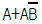
를 간단히 하면?- A
- B
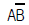
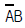
(정답률: 59%)
14. 데이터 모뎀에 있어서 데이타 변조 속도의 표시단위는?
- 비트/초
- BAUD
- CHARACTER/초
- Hz
(정답률: 74%)
15. 급전선의 필요한 조건이라고 볼 수 없는 것은?
- 전송효율이 좋을 것
- 급전선의 특성임피던스가 적당할 것
- 유도방해를 주거나 받지 않을 것
- 송신용일 때는 절연내력이 적을 것
(정답률: 80%)
16. 무선송신기에서 사용하지 않는 회로는?
- 고주파증폭회로
- 자동전압조정(AVC)회로
- 변조회로
- 발진회로
(정답률: 54%)
17. 다음중 펄스변조방식이 아닌 것은?
- PCM
- PWM
- PPM
- SSB
(정답률: 59%)
18. 방송국에서 발사된 전파가 150[km]떨어진 거리에 도달하는데 걸리는 시간은 몇 초인가?
- 5
- 1
- 0.01
- 0.00⑤
(정답률: 55%)
19. 가청주파 증폭기에서 부궤환회로를 사용하는 목적으로 적당하지 않은 것은?
- 왜곡(distortion)을 개선하려고
- 이득을 크게 하려고
- 주파수특성을 좋게 하려고
- 잡음을 적게 하려고
(정답률: 60%)
20. 다음 중 단파통신과 비교하여 마이크로웨이브 통신의 장점이 아닌 것은?
- 주파수대역폭이 넓다.
- 가시거리통신이 가능하다.
- 중계소가 없이 원거리 통신이 가능하다.
- 외부잡음의 영향이 적다.
(정답률: 69%)
2과목: 임의 과목 구분(20문항)
21. 기존 컬러 텔레비젼 신호를 전송하기 위해서는 얼마의 채널대역폭이 필요한가? (단, NTSC방식)
- 200KHz
- 15.72KHz
- 4.2MHz
- 6MHz
(정답률: 66%)
22. 다음중 주파수분할다중통신(FDM)용 마이크로파 발진기로 가장 적당한 것은?
- 메이져(maser)
- 건(gunn) 발진기
- 반사형 크라이스트론(klystron)
- 마그네트론
(정답률: 52%)
23. HDLC(High-Level Data Link Control)와 가장 관계가 깊은 계층(Layer)은?
- 물리계층(Physical Layer)
- 데이터링크계층(Data Link Layer)
- 네트워크계층(Network Layer)
- 전송계층(Transport Layer)
(정답률: 49%)
24. 광섬유케이블을 심선의 구조를 설명한 내용이 내부에서 외부쪽으로 순서대로 잘된 것은?
- 클레딩 - 코어 - 1차코팅 - 2차코팅
- 코어 - 클레딩 - 1차코팅 - 2차코팅
- 1차코팅 - 2차코팅 - 클레딩 - 코어
- 1차코어 - 1차클레딩 - 2차코어 - 2차클리딩
(정답률: 88%)
25. 다음중 전화기의 보안장치와 관계없는 것은?
- 피뢰기(arrestor)
- 퓨즈(fuse)
- 열선륜(heat coil)
- 콘덴서(condenser)
(정답률: 73%)
26. 전자교환기의 구조장치중 호를 처리하는 과정에서 호에 관계되는 정보를 일시적으로 기억하는 장치는?
- 중앙제어장치(CC)
- 주사장치(SCN)
- 호처리기억장치(CS)
- 프로그램기억장치(PS)
(정답률: 64%)
27. TV와 전화의 연결에 의한 새로은 정보서비스를 무엇이라 하는가?
- 비디오텍스(Videotex)
- 텔렉스(Telex)
- 텔레텍스(Teletex)
- 팩시밀리(Fax)
(정답률: 77%)
28. 다음 무선설비의 기기중 형식등록을 하여야 하는 기기는?
- 주파수공용무선전화장치
- 디지털선택호출전용수신기
- 경보자동전화장치
- 네비텍스수신기
(정답률: 83%)
29. 우리나라 전기통신사업의 구분과 관계 없는 것은?
- 기간통신사업
- 별정통신사업
- 전송통신사업
- 부가통신사업
(정답률: 53%)
30. 종합정보통신망(ISDN)에서 사용하는 교환기국간 신호방식은 무슨방식인가?
- R1방식
- No.5방식
- R2방식
- No.7방식
(정답률: 74%)
31. 광섬유내에서 산란손실은 빛의 파장(λ)과 어떠한 관계가 있는가?
- 2승에 비례
- 2승에 반비례
- 4승에 비례
- 4승에 반비례
(정답률: 64%)
32. 전송선로의 특성임피던스를 1차 정수로 표시한 것은?
- 가.
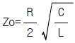
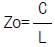
- Zo=RLC
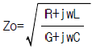
(정답률: 66%)
33. 전송케이블의 전기적 1차 정수를 R, L, C, G 라고 할 때 무왜 전송조건은?
- RL = CG
- RC = LG
- RG = LC
- R = LCG
(정답률: 70%)
34. 발진회로의 항온조에 사용되지 않는 소자는?
- bimetal
- thermister
- thyrister
- 수은온도계 접점
(정답률: 56%)
35. 톱 로딩(Top loading) 안테나에 관한 설명으로 옳지 않은 것은?
- 주로 단파 해외방송용으로 사용된다.
- 원정관은 대지와의 정전용량을 증가시키기 위한 것이다.
- 고각도 복사를 억제시킨다.
- 근거리 페이딩(fading)을 감소시킨다.
(정답률: 55%)
36. FM수신기에서 주파수 변별기(frequency discriminator) 회로의 기능으로 가장 타당한 것은?
- FM파를 AM파로 변환
- 충격성 잡음을 포함한 입력신호를 일정레벨로 차단
- 수신된 신호성분중 고주파 부분을 억제
- 반송파가 없어지는 경우 수신기 출력을 제어
(정답률: 42%)
37. ISDN의 S 또는 T 기준점에서 기본접속용(Basic Access)인터페이스(Interface)구조는? (단, B:64kbps의 정보량을 가지는 채널, D:16kbps의 정보량을 가지는 채널)
- 2B+D
- B+D
- 20B+D
- 30B+D
(정답률: 55%)
38. 코어의 굴절율을 n1 , 클래드의 굴절율이 n2 라면 개구수의 값은?
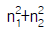
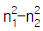
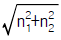
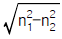
(정답률: 50%)
39. 광섬유케이블의 광통신측정에 사용되는 OTDR(일명 광펄스시험기)은 다음 어느것을 측정하는가?
- 광섬유심선의 굴절율
- 광파손실
- 미드필드직경
- 광전파속도
(정답률: 70%)
40. 안테나에 관한 저항 중 클수록 좋은 것은?
- 도체 저항
- 안테나 임피턴스
- 급전선 임피던스
- 복사 저항
(정답률: 68%)
3과목: 임의 과목 구분(20문항)
41. OSI 참조 모델중, 응용프로세서에 대하여 OSI 환경에 엑세스하기 위한 수단을 제공하는 최상위계층은?
- application 층
- presentation 층
- session 층
- transport 층
(정답률: 67%)
42. 그림 (a) 와 (b)가 등가회로일 때 Vab의 값은?
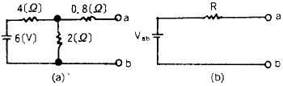
- 1[V]
- 2[V]
- 4[V]
- 6[V]
(정답률: 50%)
43. 다음 통신 중 비밀을 탐지하기가 가장 쉬운 것은?
- 전령 통신
- 음향 통신
- 등기 우편
- 무선 통신
(정답률: 54%)
44. 시시각각으로 변화하는 전기적인 파형을 스크린 상에 묘사시켜 파형을 측정ㆍ분석하는 기기는?
- 디지털 멀티미터
- 오실로스코프
- L3 시험기
- Pulse 시험기
(정답률: 74%)
45. 여파기(filter)의 구비 조건이 아닌 것은?
- 전력 소비가 적을 것
- 예리한 차단 특성을 가질 것
- 통과 대역 외의 감쇠량이 작을 것
- 통과 대역의 주파수 특성이 평탄할 것
(정답률: 32%)
46. 다음 중 완충 증폭기를 사용하는 목적은?
- 주파수 체배를 높이기 위해
- 발진주파수를 안정화 시키기 위해
- 증폭의 효율을 대폭 높이기 위해
- 고주파 전력의 증폭을 높이기 위해
(정답률: 59%)
47. 비동기 전송방식과 비교하여 동기식 전송방식의 특징이 아닌 것은?
- 전송율이 좋고, 장거리 전송에 유리하다.
- 문자사이에는 항상 휴지 간격이 존재한다.
- 단말기는 기억장치(버퍼)를 갖고 있어야 한다.
- 동기문자는 송수신의 동기를 유지하기 위해 사용된다.
(정답률: 36%)
48. 정보통신시스템에서 통신제어장치 및 주변제어장치와 비교할 때 중앙처리장치의 기능과 관계가 없는 것은?
- 시스템 전체를 제어한다.
- 통신회선을 설정하고 제어한다.
- 통신제어장치나 주변장치를 제어한다.
- 데이터의 축적, 검색, 변경 및 처리를 수행한다.
(정답률: 46%)
49. 단일모드 광섬유 융착 접속 순서는?
- 광섬유 확인-광섬유 예열-코어축 정렬-융착
- 코어축 정렬-광섬유 예열-광섬유 확인-융착
- 코어축 정렬-광섬유 확인-광섬유 예열-융착
- 광섬유 예열-코어축 정렬-광섬유 확인-융착
(정답률: 49%)
50. 군사용으로 개발된 시스템으로 정보통신 시스템의 원조로 알려진 데이터 통신 시스템은?
- NTDS
- ENIAC
- SAGE
- SABRE
(정답률: 63%)
51. 케이블을 절연 접속하는 가장 중요한 목적은?
- 화학적인 부식을 방지하기 위하여
- 누설 지(地)전류를 차단하기 위하여
- 낙뢰로 인한 피해를 방지하기 위하여
- 납땜을 절약하기 위하여
(정답률: 79%)
52. 시내전화 선로가 교환국내에서 최초로 접속되는 장치는?
- 단자함
- 본배선반(MDF)
- 중간배선반(IDF)
- 배전반
(정답률: 61%)
53. 다음중 광통신 케이블의 근본원리는?
- 빛의 전반사
- 빛의 투과
- 빛의 굴절
- 빛의 직진
(정답률: 54%)
54. 무선수신기에서 프리엠파시스 회로를 사용하는 목적은?
- 명료도를 개선
- 선택도를 개선
- 높은 주파수의 잡음을 개선
- 감도를 개선
(정답률: 44%)
55. 미리 정해진 일정 단위중에 포함된 부적합(결점)수에 의거 공정을 관리할 때 사용하는 관리도는?
- p관리도
- nP관리도
- c관리도
- u관리도
(정답률: 56%)
56. 도수분포표에서 도수가 최대인 곳의 대표치를 말하는 것은?
- 중위수
- 비 대칭도
- 모우드(mode)
- 첨도
(정답률: 49%)
57. 로트수가 10 이고 준비작업시간이 20분이며 로트별 정미작업시간이 60분이라면 1로트당 작업시간은?
- 90분
- 62분
- 26분
- 13분
(정답률: 56%)
58. 더미활동(dummy activity)에 대한 설명중 가장 적합한 것은?
- 가장 긴 작업시간이 예상되는 공정을 말한다.
- 공정의 시작에서 그 단계에 이르는 공정별 소요시간들중 가장 큰 값이다.
- 실제활동은 아니며, 활동의 선행조건을 네트워크에 명확히 표현하기 위한 활동이다.
- 각 활동별 소요시간이 베타분포를 따른다고 가정할 때의 활동이다.
(정답률: 48%)
59. 단순지수평활법을 이용하여 금월의 수요를 예측할려고 한다면 이때 필요한 자료는 무엇인가?
- 일정기간의 평균값, 가중값, 지수평활계수
- 추세선, 최소자승법, 매개변수
- 전월의 예측치와 실제치, 지수평활계수
- 추세변동, 순환변동, 우연변동
(정답률: 46%)
60. 다음 중 검사항목에 의한 분류가 아닌 것은?
- 자주검사
- 수량검사
- 중량검사
- 성능검사
(정답률: 64%)